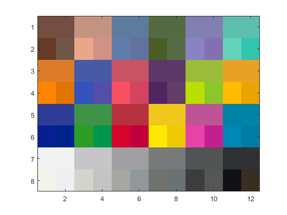

Credits
Team #: 1 | Authors: Cooper White & Gian-Mateo Tifone | Date: 12/05/2023
Contents
Step 1 - Initialize
clear
disp("Certifiable Jim Moment", newline)
Certifiable Jim Moment
Step 2 - Import Camera Data
%a) cie = loadCIEdata; load('display_model.mat') Camera.RGB = importdata('CameraRGB.txt',' '); % Read in RGBs of CC image [3x24] [R;G;B] Camera.RGB = uint8(Camera.RGB*255); % RGB's were calculated as averaged over a span of 255, meaning they're imported % normalized to 255 [RGB/255 built in] %b) Camera.RGBNorm = double(Camera.RGB) * 100/255; % Turn to double, divide by 255, multiply 100 Camera.RGBNorm = uint8(Camera.RGBNorm); % convert back to uint8 %c) Creating the table4ti1 matrix table4ti1 = ones(30, 4); table4ti1(:, 1) = 1:30; table4ti1(1:24, 2:4) = Camera.RGBNorm'; table4ti1(25:27, 2:4) = 0; table4ti1(28:30, 2:4) = 100; %d) Made workflow_test_uncal.ti1 %e) used ColorMunki and made workflow_uncal_test.ti3 %f) create data structure that contains the displayed XYZs %g) Extract XYZ, whitepoint, blackpoint uncal_XYZs = importdata('workflow_test_uncal.ti3',' ',20); uncal_CC.XYZ = uncal_XYZs.data(1:24,5:7); % Extract XYZs of color uncal_CC.XYZk = mean(uncal_XYZs.data(25:27,5:7)); % Extract Whitepoint uncal_CC.XYZw = mean(uncal_XYZs.data(28:30,5:7)); % Extract Blackpoint %h) Calculate Lab values uncal_CC.Lab = XYZ2Lab(uncal_CC.XYZ', uncal_CC.XYZw'); %i) Load the real Colormuki values load("loadMunkiData"); %j) Calculate differences between Real patch and displayed Patch dEabLab = deltaEab(Munki.Lab, uncal_CC.Lab); %k) Print differences print_uncalibrated_workflow_error(Munki.Lab, uncal_CC.Lab, dEabLab)
Uncalibrated workflow color error
camera->RGB_cam->display
Real vs. displayed ColorChecker Lab values
real displayed
patch # L a b L a b dEab
1 37.1865 14.9985 15.2592 29.8742 16.2989 19.4323 8.5191
2 65.8188 16.8695 18.0267 75.6815 17.4614 23.3487 11.2227
3 49.9949 -3.1841 -23.5159 54.9321 -0.8514 -23.5229 5.4605
4 42.6411 -15.3251 20.0423 37.0305 -13.9409 28.3826 10.1467
5 54.6852 9.6978 -26.7126 61.1919 10.5869 -27.0322 6.5750
6 71.2441 -33.1391 -0.5010 78.3906 -29.0364 2.6745 8.8311
7 62.2558 34.1094 57.7774 68.6107 31.0839 63.8047 9.2663
8 39.5890 9.9980 -43.6388 43.9440 12.9739 -49.4663 7.8602
9 51.8424 48.1403 16.0636 61.0421 49.5810 22.6561 11.4093
10 29.4495 22.4255 -21.7661 26.8158 20.9975 -24.6292 4.1441
11 71.6264 -24.3441 57.6850 82.1446 -24.8756 76.4793 21.5439
12 72.2288 20.6039 69.0149 79.5481 9.8380 73.1175 13.6494
13 28.6402 18.5907 -51.4092 27.2084 20.8820 -52.7247 3.0051
14 54.6309 -39.5493 32.8341 55.2819 -40.7925 46.6986 13.9353
15 42.5988 54.6049 25.7315 47.6993 55.0102 35.8164 11.3086
16 82.4265 3.8689 78.8570 90.5624 -8.8413 82.1891 15.4546
17 51.5476 49.5154 -14.3758 60.5965 50.8798 -14.0499 9.1570
18 49.3892 -26.5473 -28.6645 55.0682 -12.6504 -28.8409 15.0136
19 95.4458 -0.4414 0.0244 97.4131 -1.0454 3.8483 4.3425
20 80.0339 0.1309 -0.9345 86.2196 -1.1566 4.6309 8.4199
21 66.0107 -0.0004 -1.1463 69.7412 0.0344 3.0708 5.6304
22 50.5546 -0.6207 -0.9616 49.9007 -1.7089 3.0768 4.2333
23 35.1532 -0.0632 -0.9708 25.7664 0.0056 0.4712 9.4972
24 20.3224 -0.2858 -0.5603 4.7518 0.9161 -3.1545 15.8309
min 3.0051
max 21.5439
mean 9.7690
Step 2 - Calibrated Workflow
%a) Camera.RGBNorm - Same as Step 1.a Camera.RGB; %b) Put our Camera's RGB thru RGB2XYZ CalCamera.XYZ = camRGB2XYZ('cam_model.mat', Camera.RGB); %c) %CalCamera.XYZn_D50 = catBradford(CalCamera.XYZ, XYZw, cie.illD50); CalCamera.XYZn_D50 = ref2XYZ(cie.PRD,cie.cmf2deg,cie.illD50); CalCamera.RGB_DC = XYZ2dispRGB('display_model.mat',CalCamera.XYZ,CalCamera.XYZn_D50); %d) CalCamera.RGBNorm = double(CalCamera.RGB_DC) * 100/255; CalCamera.RGBNorm = uint8(CalCamera.RGBNorm); %e) Creating the table4ti1 matrix - But for step 2 % NOTE: Does override the table in step 1 table4ti1 = ones(30, 4); table4ti1(:, 1) = 1:30; table4ti1(1:24, 2:4) = CalCamera.RGBNorm'; table4ti1(25:27, 2:4) = 0; table4ti1(28:30, 2:4) = 100; %f) Make "workflow_test_cal.ti1 %g) Use colormunki - dispread -P 1,0,2 -v workflow_test_cal %h) Load the measured XYZs cal_XYZs = importdata('workflow_test_cal.ti3',' ',20); %i) Extract XYZ data cal_CC.XYZ = cal_XYZs.data(1:24,5:7); % Extract XYZs of color cal_CC.XYZk = mean(cal_XYZs.data(25:27,5:7)); % Extract Whitepoint cal_CC.XYZw = mean(cal_XYZs.data(28:30,5:7)); % Extract Blackpoint %j) Calculate Lab values cal_CC.Lab = XYZ2Lab(cal_CC.XYZ', cal_CC.XYZw'); %k) Load the real Colormuki values - Previously done %load("loadMunkiData"); %l) Calculate differences between Real patch and displayed Patch dEabLab = deltaEab(Munki.Lab, cal_CC.Lab); %m) Print differences print_calibrated_workflow_error(Munki.Lab, cal_CC.Lab, dEabLab)
Calibrated workflow color error
camera->RGB_cam->camera_model->XYZ_est->display_model->RGB_disp->display
Real vs. displayed ColorChecker Lab values
real displayed
patch # L a b L a b dEab
1 37.1865 14.9985 15.2592 40.5835 6.5386 15.1865 9.1168
2 65.8188 16.8695 18.0267 68.1864 17.4855 15.3790 3.6049
3 49.9949 -3.1841 -23.5159 52.1230 1.4922 -20.5226 5.9461
4 42.6411 -15.3251 20.0423 43.6653 -11.9942 19.5343 3.5216
5 54.6852 9.6978 -26.7126 55.9860 14.1669 -25.7440 4.7543
6 71.2441 -33.1391 -0.5010 72.3120 -33.3137 0.6076 1.5492
7 62.2558 34.1094 57.7774 62.2950 28.8702 59.1092 5.4060
8 39.5890 9.9980 -43.6388 43.0032 17.4891 -40.9529 8.6595
9 51.8424 48.1403 16.0636 53.2634 45.2668 15.3821 3.2772
10 29.4495 22.4255 -21.7661 35.0518 19.2716 -17.8754 7.5147
11 71.6264 -24.3441 57.6850 72.7212 -31.4567 62.4342 8.6221
12 72.2288 20.6039 69.0149 71.9644 12.6305 67.2492 8.1709
13 28.6402 18.5907 -51.4092 26.4145 19.7680 -50.0016 2.8846
14 54.6309 -39.5493 32.8341 53.2584 -38.8467 26.4036 6.6128
15 42.5988 54.6049 25.7315 43.4387 50.7935 22.4711 5.0855
16 82.4265 3.8689 78.8570 81.9677 -2.2929 75.5607 7.0032
17 51.5476 49.5154 -14.3758 50.1481 50.9792 -15.7627 2.4546
18 49.3892 -26.5473 -28.6645 50.8335 -11.3080 -26.9398 15.4044
19 95.4458 -0.4414 0.0244 96.0875 -0.8868 0.3125 0.8325
20 80.0339 0.1309 -0.9345 81.1341 -0.9826 1.7478 3.1057
21 66.0107 -0.0004 -1.1463 64.1971 -2.3459 0.0365 3.1921
22 50.5546 -0.6207 -0.9616 50.0690 -2.4896 -0.2417 2.0608
23 35.1532 -0.0632 -0.9708 38.2900 -1.1487 0.1242 3.4953
24 20.3224 -0.2858 -0.5603 20.2337 0.7088 12.0015 12.6015
min 0.8325
max 15.4044
mean 5.6199
Step 3 - Visualize the differences
... Between ground-truth, uncalibrated, and calibrated renderings of the ColorChecker chart
%a) Load the real Colormuki values - Previously done %load("loadMunkiData"); %b) Use "cform" to calculate RGB from XYZ Munki.RGB = applycform(Munki.XYZ', makecform('XYZ2sRGB', 'AdaptedWhitePoint', CalCamera.XYZn_D50')); %c) Munki.RGB = uint8(Munki.RGB * 255)'; % RGBs are given 0-1 by the function %d) Create workflow diffs % Uncalibrated: Camera.RGB % Calibrated: CalCamera.RGB_DC % Ground-truth: Munki.RGB G_truth = flip ( imrotate( reshape(Munki.RGB', [6 4 3]), 90 ) ); Uncalibrated = uint8 ( flip ( imrotate( reshape(Camera.RGB', [6 4 3]), 90 ) ) ); Calibrated = flip ( imrotate( reshape(CalCamera.RGB_DC', [6 4 3]), 90 ) ); % Array to reform - Convert to uint8 to be read 0-255 workflow = uint8(ones(8, 12, 3)); % Ground Truth workflow(1:2:7, 1:2:11, :) = G_truth; workflow(1:2:7, 2:2:12, :) = G_truth; % Uncalibrated workflow(2:2:8, 1:2:11, :) = Uncalibrated; % Calibrated workflow(2:2:8, 2:2:12, :) = Calibrated; % Show image figure workflow_image = image(workflow) %e) workflow_image = imresize(workflow, [768 1024], 'nearest'); %f) imwrite(workflow_image, "sillychart.jpg")
workflow_image =
Image with properties:
CData: [8×12×3 uint8]
CDataMapping: 'direct'
Use GET to show all properties
 Step 4 - Color Accurate Imaging
load your original CC image
img_orig = imread("ColorChecker.jpg"); % reshape the image into a pixel vector [r,c,p] = size(img_orig); pix_orig = reshape(img_orig,[r*c,p])'; % process the pixels through your camRGB2XYZ and % XYZ2dispRGB functions to calc color-calibrated % DCs pix_XYZ = camRGB2XYZ('cam_model.mat', pix_orig); pix_DCs_calib = XYZ2dispRGB('display_model.mat', pix_XYZ, CalCamera.XYZn_D50); % reshape the pixels back into an image img_calib = reshape(pix_DCs_calib', [r,c,p]); %b) imwrite(img_calib, "DaColourChecker.png"); %c) figure imshow("ColorChecker.jpg") figure imshow("DaColourChecker.png")
Step 5 - Feedback
%i) % Cooper & Gian-Mateo both worked on the project. Cooper wrote step 2, % Gian-Mateo wrote step 3, the remainder was written together %ii) % Spatial reasoning matrices %iii) % Combining parts of a larger array with a smaller one / catination %iv) % It was alright, no improvements.